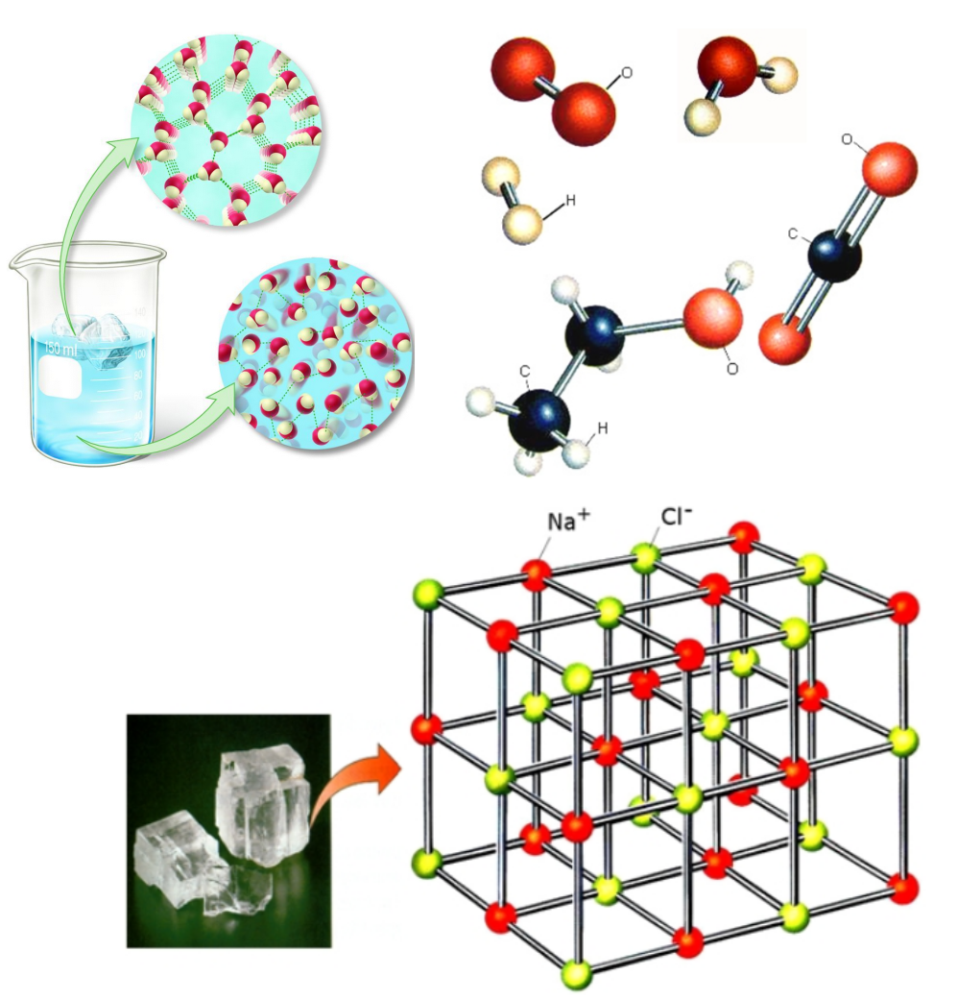

{kind=link}

1 Μαΐου 2024
Η ατομική δομή της ύλης συνίσταται στο γεγονός ότι η ύλη αποτελείται από διακριτά θεμελιώδη σωμάτια τα οποία δεν τέμνονται περισσότερο και μεταξύ τους υπάρχει κενό. Σαν φιλοσοφική ιδέα ξεκίνησε από τον Λεύκιππο και τον Δημόκριτο (4ος αιώνας π.Χ.). Για πολλούς αιώνες ξεχάστηκε και αναβίωσε στις αρχές του 19ου αιώνα από τον Ντάλτον (Dalton). Στις αρχές του 20ου αιώνα οι ανακαλύψεις ήταν ραγδαίες με πολύ σημαντικά πειράματα, με αποτέλεσμα να θεμελιωθεί η σύγχρονη φυσική. Σήμερα γνωρίζουμε ότι η ύλη αποτελείται από τουλάχιστον 12 σωμάτια ύλης και άλλα τόσα αντισωμάτια που αποτελούν την αντιύλη. Αλλά ας δούμε τα πράγματα πιο αναλυτικά...
Τα πέντε κύρια σημεία της ατομικής θεωρίας του Ντάλτον [1] είναι τα παρακάτω:
Δηλαδή, εάν παρατηρήσουμε μια χημική ένωση όπως το νερό `Η_2 Ο` μέσα σε ένα ποτήρι θα δούμε ότι αποτελείται από μικρά, διακεκριμένα σωματίδια, που μεταξύ τους υπάρχει κενός χώρος και ονομάζονται μόρια. Ανάλογη εικόνα θα έχουμε όταν παρατηρήσουμε ένα χημικό στοιχείο, όπως το οξυγόνο (`O_2`) μέσα σε ένα δοχείο. Θα δούμε ότι αποτελείται και αυτό από διακεκριμένα σωματίδια, τα μόρια. Και στις δύο αυτές περιπτώσεις τα μόρια αποτελούνται από μικρότερα σωματίδια που ονομάζονται άτομα. Η διαφορά είναι ότι τα μόρια ενός χημικού στοιχείου αποτελούνται από όμοια άτομα ενώ τα μόρια μιας χημικής ένωσης από διαφορετικά.

(α) Στην εικόνα πάνω αριστερά βλέπουμε ένα ποτήρι με νερό και παγάκια. Παρατηρήστε ότι το νερό σε υγρή μορφή αλλά και στην μορφή του πάγου αποτελείται από διακριτά μεταξύ τους μόρια. (β) Στην εικόνα πάνω δεξιά βλέπουμε μερικά τέτοια μόρια διαφόρων υλικών. Παρατηρήστε ότι όλα τα μόρια αποτελούνται από άτομα. Μερικά μόρια αποτελούνται από το ίδιο είδος ατόμων και οι ουσίες που αποτελούνται από τέτοια άτομα λέγονται χημικά στοιχεία, ενώ εάν τα μόρια τους περιέχουν διαφορετικά είδη ατόμων τότε ονομάζονται χημικές ενώσεις. (γ) Τέλος στην εικόνα κάτω βλέπουμε μια τρίτη κατάσταση όπου όλο το υλικό αποτελείται από φορτισμένα άτομα (ιόντα) τοποθετημένα με τέτοιο τρόπο που να σχηματίζεται ένας κρύσταλλος.
Υπάρχει και μια τρίτη περίπτωση όπου τα άτομα έχουν φορτίο και ονομάζονται ιόντα. Τα ιόντα αυτά με ενιαίο τρόπο διατάσσονται στον χώρο στις κορυφές γεωμετρικών στερεών, που ονομάζονται κρύσταλλοι.
Το συμπέρασμα είναι ότι όλες οι ουσίες που μπορούμε να βρούμε στην φύση αποτελούνται από μόρια (μοριακές) ή ιόντα (ιοντικές) και αυτά με σειρά τους από άτομα. Υπάρχουν συνολικά 118 είδη ατόμων, από τα οποία τα πρώτα 98 υπάρχουν στην φύση και τα υπόλοιπα τα έχουμε κατασκευάσει. Αυτά λοιπόν τα άτομα σαν τα τουβλάκια του γνωστού παιχνιδιού συνδέονται μεταξύ τους για να φτιάξουν μόρια και κρυστάλλους και με την σειρά τους τις ουσίες που βρίσκονται γύρω μας. Τα άτομα αυτά τα έχουμε κατατάξει σε ένα πίνακα που ονομάζεται περιοδικός πίνακας [3].
Το ερώτημα που γεννιέται είναι αν τα άτομα είναι αδιαίρετα σωματίδια; Την απάντηση δώσανε λαμπρές προσωπικότητες (Rutherford 1911, Bohr 1913, Sommerfield 1916, Schrodinger 1926) που διαμόρφωσαν τη γνώση γύρο από το άτομο. Σε αυτό το σημείο αρχίζουν να αναπτύσσονται έννοιες που είναι πολύ μακρυά από την καθημερινή εικόνα της φύσης. Θα λέγαμε ότι έχουμε ένα κομβικό σημείο όπου σηματοδοτείτε η γέννηση της σύγχρονης φυσικής του 20ου αιώνα και διαφοροποιείται από την κλασσική φυσική των περασμένων αιώνων.
Το άτομο αποτελείται από έναν μικροσκοπικό πυρήνα και από ηλεκτρόνια που βρίσκονται γύρω του. Σχεδόν όλη η μάζα του ατόμου βρίσκεται μέσα στον πυρήνα. Τα ηλεκτρόνια βρίσκονται γύρω από τον πυρήνα σε καθορισμένες καταστάσεις, οι οποίες καθορίζονται από μια σειρά κβαντικών αριθμών. Οι κβαντικοί αυτοί αριθμοί είναι τέσσερις. Ο κύριος κβαντικός αριθμός (n), ο αζιμουθιακός (l), ο μαγνητικός (`m_l`) και ο κβαντικός αριθμός του σπιν (`m_s`). Κάθε ηλεκτρόνιο έχει διαφορετική τετράδα αριθμών (Pauli 1924). Κάθε ηλεκτρόνιο δηλαδή βρίσκεται σε διαφορετική κατάσταση από τα υπόλοιπα. Οι καθορισμένες αυτές καταστάσεις περιγράφονται από μία συνάρτηση, που ονομάζεται κυματοσυνάρτηση, είναι λύση της εξίσωσης Schrodinger. Η συνάρτηση αυτή από μόνη της δεν έχει κάποια φυσική σημασία αλλά το τετράγωνό της σχετίζεται με την πιθανότητα να βρεθεί το ηλεκτρόνιο σε κάποιο σημείο του χώρου γύρο από τον πυρήνα. Ένα ηλεκτρόνιο μπορεί να διεγερθεί σε κατάσταση μεγαλύτερης ενέργειας, απορροφώντας ενέργεια. Το ηλεκτρόνιο μετά από λίγο θα μεταπέσει πάλι πίσω εκπέμποντας ενέργεια με μορφή φωτονίων. Επίσης, τα ηλεκτρόνια είναι υπεύθυνα για την δημιουργία του χημικού δεσμού, των χημικών δηλαδή αντιδράσεων που συμβαίνουν καθημερινά γύρω μας.
Ο πυρήνας είναι πολύ μικρός και σύνθετος, αποτελείται και αυτός από μικρότερα σωμάτια που είναι δύο ειδών. Ονομάζονται πρωτόνιο και νετρόνιο. Το πρωτόνιο έχει θετικό φορτίο ενώ το νετρόνιο είναι ουδέτερο. Έχουν σχεδόν την ίδια μάζα, μόνο που το νετρόνιο είναι ελαφρώς πιο βαρύ. Το ηλεκτρόνιο είναι πολύ μικρό και μάλιστα 1836 φορές μικρότερο από το πρωτόνιο και 1838 φορές μικρότερο από το νετρόνιο. Αν μπορούσαμε να παρομοιάσουμε το άτομο με ένα ποδοσφαιρικό γήπεδο, τότε ο πυρήνας θα είχε το μέγεθος μιας μικρής μπάλας στο σημείο της σέντρας και τα ηλεκτρόνια θα είχαν το μέγεθος των κεφαλών καρφίτσας που περιστρέφονται μέσα στο στάδιο στην περιοχή των θεατών. Ο υπόλοιπος χώρος θα ήταν κενός. Το πρωτόνιο και το νετρόνιο ονομάζονται νουκλεόνια. Τα νουκλεόνια βρίσκονται και αυτά (όπως και τα ηλεκτρόνια) σε διαφορετικές ενεργειακές καταστάσεις. Τα νουκλεόνια σχετίζονται με φαινόμενα που έχουν σχέση με τις ραδιενεργές διασπάσεις, την ραδιενέργεια, τις πυρηνικές αντιδράσεις κ.α.
Η ερώτηση για το αν το ηλεκτρόνιο, το πρωτόνιο και το νετρόνιο είναι σύνθετα σωματίδια ή όχι είναι σχεδόν αυθόρμητη. Από το 1961 και μετά μια σειρά πειραματικών και θεωρητικών ερευνών έχουν δείξει μια πλειάδα στοιχειωδών σωματιδίων. Όπως θα δούμε πιο κάτω το πρωτόνιο και το νετρόνιο είναι σύνθετα σωματίδια ενώ το ηλεκτρόνιο είναι στοιχειώδες.
Τα γνωστά στοιχειώδη σωμάτια είναι τα παρακάτω:
Το πρωτόνιο και το νετρόνιο είναι σύνθετα σωμάτια και αποτελούνται από 3 κουάρκ. Το πρωτόνιο αποτελείται από 2 up και 1 down, ενώ το νετρόνιο από 2 down και 1 up. Μεταξύ τους αυτά τα quark ανταλλάσσουν γλουόνια που τα συγκρατούν ενωμένα.
Στην εικόνα βλέπουμε τις κατηγορίες των στοιχειωδών σωματιδίων. Πηγή: Wikipedia (Standard Model). Πατήστε πάνω στην εικόνα για να μεγαλώσει.
Τα στοιχειώδη σωμάτια ανήκουν σε δύο βασικές κατηγορίες. Τα φερμιόνια και τα μποζόνια. Στην κατηγορία των φερμιονίων ανήκουν τα quarks και τα λεπτόνια, συνολικά 12 σωματίδια. Φυσικά μαζί με αυτά πρέπει να συμπεριλάβουμε και τα ανισωμάτιά τους που έχουν ίδιες ιδιότητες αλλά διαφορετικό φορτίο. Τελικά ο αριθμός των φερμιονίων ανέρχεται στα 24 σωματίδια. Έχουν όλα ημιακέραιο σπίν και υπακούν στην απαγορευτική αρχή του Pauli όπου δύο διαφορετικά φερμιόνια δεν μπορούν να βρεθούν στην ίδια κβαντομηχανική κατάσταση, με ίδιους δηλαδή τους 4 κβαντομηχανικούς αριθμούς. Τα φερμιόνια είναι φορείς της ύλης και της αντιύλης. Στο σημερινό σύμπαν υπάρχουν μόνο τα φερμιόνια πρώτης γενιάς, τα υπόλοιπα υπήρχαν στα πρώτα στάδια δημιουργίας του σύμπαντος αλλά όχι σήμερα.
Στην κατηγορία των μποζονίων ανήκουν στοιχειώδη σωμάτια που ευθύνονται για τις αλληλεπιδράσεις (δυνάμεις) μεταξύ των φερμιονίων. Οι δυνάμεις μεταξύ δύο σωματίων εξηγούνται με την ανταλλαγή μποζονίων. Όλα τα μποζόνια έχουν ακέραιο σπίν και υπακούν στην στατιστική Bose-Einstein, όπου στην ίδια κβαντομηχανική κατάσταση μπορούν να βρεθούν πολλά μποζόνια. Στην κατηγορία αυτή πρέπει να προσθέσουμε ένα υποθετικό σωμάτιο, το γραβιτόνιο, υπεύθυνο για την βαρυτική αλληλεπίδραση, χωρίς όμως ακόμα να έχει ανακαλυφθεί. Τέλος το μποζόνιο Higgs (2012) είναι ένα σωμάτιο που σχετίζεται με τον μηχανισμό που τα υπόλοιπα σωμάτια (αλλά και το ίδιο) αποκτούν μάζα (όσα από αυτά έχουν).
Στην εικόνα βλέπουμε το μεγαλύτερο μικροσκόπιο στον κόσμο CERN, το οποίο βρίσκεται στην Γενεύη της Ελβετίας. Ο άσπρος κύκλος σημαδεύει τα 27 χιλιόμετρα του τούνελ του LEP (Large Electron Positron collider - μεγάλος επιταχυντής συγκρουόμενων δεσμών ηλεκτρονίων-ποζιτρονίων) που διατρέχει υπόγεια την ύπαιθρο. Το αεροδρόμιο της Γενεύης φαίνεται καθαρά μπροστά ενώ τα βουνά Ζουρά (Jura) εμφανίζονται κάτω από τα σύννεφα στο βάθος. Η διάστικτη γραμμή δείχνει τα σύνορα μεταξύ Γαλλίας (προς το βορρά) και Ελβετίας (προς το νότο). Το κύριο κτιριακό συγκρότημα του CERN βρίσκεται στα αριστερά του κύκλου. Πηγή: ΕΛΛΗΝΙΚΗ ΟΜΑΔΑ ΕΚΛΑΪΚΕΥΣΗΣ [5].
Εξωτερικοί σύνδεσμοι: